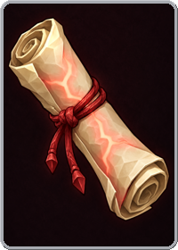
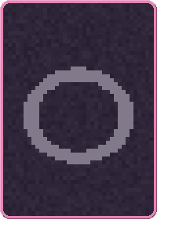
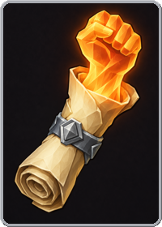
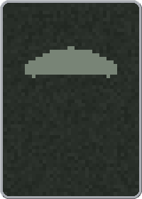

3 cantrips. Scrolls: 1 drawing the default face, 0 with no
subject written. Cantrip-relics: 3 drawing the default face, 0
with no subject written. A bundle of scrolls holds 3 for 3, 4 for 5 or 5 for 6 vitae, keep one,
drawn with replacement — so a bundle can repeat. A run carries at most
3 consumables of every kind together. Examples are cast onto the shipped
duelist: 10 DMG, 60 life. Shown at 1:1.
Regenerate with go run ./tools/cantripsheet and refresh. Every card is drawn by
internal/cards, the code the game blits, and every word beside it is read out of
data/cantrips.json through internal/session's own validation.
Every cantrip is a scroll and a relic. Casting the scroll puts its cantrip-relic
on the duelist for the rest of the fight, after the run's own relics, weightless
(it takes no slot) and ephemeral (gone when the fight ends). What a cantrip does
is whatever its relic's rules do — see MECHANICS.md §Cantrips.
Read the sentences against the rules, and the rules against the example. Each
plate prints the scroll's Text, the relic's Text, and the relic's rules
in the file's own words. The lines under those are Session.EquipWearing run on the
duelist at full life, at half (the wound kept, as a mid-fight cast keeps it), and with two casts
— the game's own arithmetic — then every element's Bash priced bare and worn, where the relic
changes it.
The subject paragraph is the art brief. The quoted block is Draw;
nothing in the game reads it. A cantrip with no subject and no art is the backlog — both lines go
pink. default-cantrip.png is the seat art goes into.
What the catalog does
Every moment and verb a cantrip-relic reaches for, read off the records.
equipped / scale-hp 1
equipped / add-dmg 1
card-damage / scale-damage 1
The catalog, by family
The body 2 cantrips


Cantrip of Endurance
cantrip-endurance
DOUBLE YOUR LIFE
FOR THIS FIGHT
a rolled parchment scroll bound with a red cord, a faint red glow of a heartbeat pulsing through the paper
scroll art: cantrip-endurance
casts Enduring
2x max life for this fight.
a faint ring of red light around a beating heart, its edges dissolving into mist
relic: no art of its own — drawing the default relic face
when equipped → scale-hp +200
life 60/60 → 120/120
life 30/60 → 90/120
cast twice at full: life 60/60 → 240/240

Cantrip of Might
cantrip-might
+10 DMG
FOR THIS FIGHT
a rolled parchment scroll bound with an iron band, a clenched fist of orange light rising from its open end
scroll art: cantrip-might
casts Mighty
+10 DMG for this fight.
a faint ring of orange light around a clenched fist, its edges dissolving into mist
relic: no art of its own — drawing the default relic face
when equipped → add-dmg +10
DMG 10 → 20
DMG 10 → 20
cast twice at full: DMG 10 → 30
The elements 1 cantrip

Cantrip of Chill
cantrip-chill
ICE CARDS DEAL 2x
FOR THIS FIGHT
a rolled parchment scroll bound with a frosted blue cord, rime creeping across the paper and a breath of cold mist curling from its open end
scroll: no art of its own — drawing default-cantrip.png
casts Chilled
Ice cards deal 2x DMG for this fight.
a faint ring of woven blue ice, its edges dissolving into cold mist
relic: no art of its own — drawing the default relic face
when card-damage, if ice → scale-damage +200
moves no figure on the duelist
moves no figure on the duelist
cast twice at full: moves no figure on the duelist
ice Bash: 10 → 20
Card states
The two states a carried cantrip is drawn in. There is no selected state: a cantrip is aimed at
nothing, so a click casts it.
Cantrip of Endurance — castable, while planningCantrip of Endurance — dim, mid-round or out of a fight